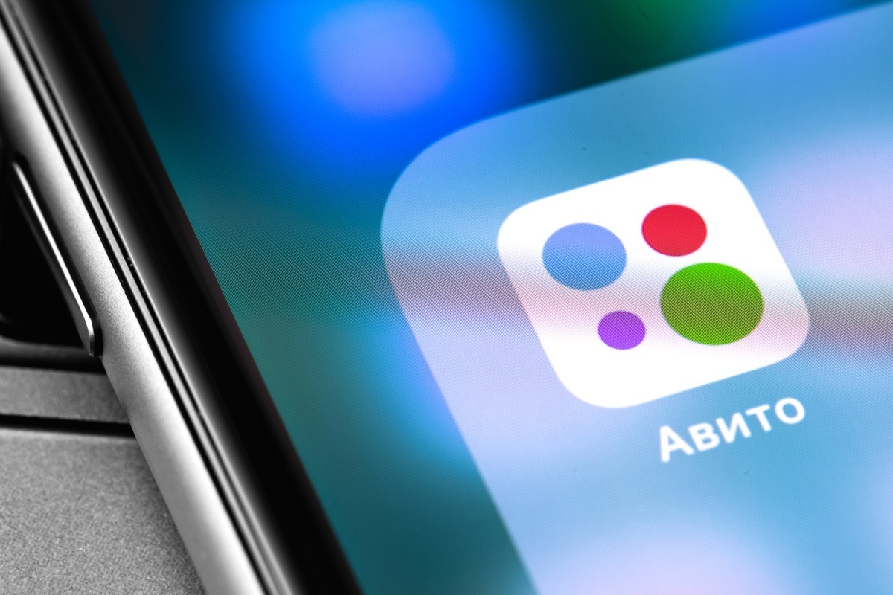
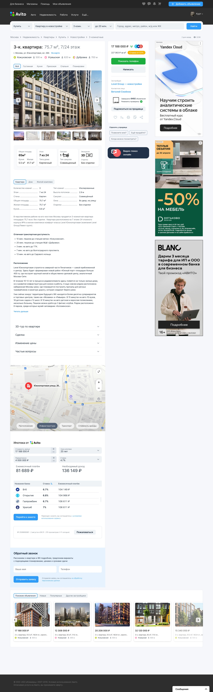

Концепт страницы объекта недвижимости
Разработал концепцию обновлённой страницы недвижимости для Авито Недвижимость. Дизайн решает две ключевые задачи: делает интерфейс более эстетичным и значительно улучшает usability.
В рамках тестового задания провёл коридорное исследование. На основе собранных болей, переосмыслил текущий UX раздела страницы недвижимости при этом блоки с рекламой оставил на месте т.к вероятно это приносит большой доход для компании.
В результате пользователи легче ориентируются в информации, а взаимодействие с сервисом становится интуитивным и комфортным.
